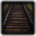
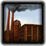
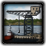

Construction
From Hearts of Iron 4 Wiki
This article is considered accurate for the current version of the game.
Constructions are fixed assets that may be built in states.
| Name | Purpose | Cost |
|---|---|---|
| Infrastructure | Facilitates the flow of supplies and increase the speed divisions can move through the state | 3000 |
| Civilian factory | Produces consumer goods, constructions and can be exchanged for resources | 7200 (Construction cost) 2000 (Conversion cost) |
| |
Produces Land units and air units | 3600 (Construction cost) 4000 (Conversion cost) |
| Naval dockyard | Produces ships | 3250 |
| Air base | Bases and repairs air units | 1250 |
| Naval base | Bases and repairs ships | 3000 |
| Anti-air | Damages attacking air units | 2500 |
| Synthetic refinery | Produces |
8750 |
| Radar station | Detects incoming aircraft | 3375 |
| Nuclear reactor | Produces nuclear bombs | 15000 |
| File:Rocket site.pngRocket base | Provides the state with deployment of produced rockets | 3250 |
| Fort | Increases defensive strength against land attacks | 1375 |
| Coastal fort | Increases defensive strength against naval invasion | 1375 |
Limitations[edit]
No state can contain a limitless number of constructions. Each state is limited to:
- 10 infrastructure levels
- 10 airfield levels
- 5 anti air levels
- 6 radar levels
- 10 Fort levels
Factory slots[edit]
Each state have between 0 and 20 factory slots. Each factory use up a factory slot. The number of factory slots a state can have is limited by the type of province, eg Metropolis, Urban, Rural or Wasteland. See the Production page for more details. A number of constructions are considered to be factories. These are:
- Civilian factory
- Military factory
- Dockyard
- Synthetic Refineries
- Nuclear Reactors
- Rocket Test Sites

{kind=link}
{kind=link}
{kind=link}
{kind=link}
{kind=link}
{kind=link}
{kind=link}
{kind=link}
{kind=link}
{kind=link}
{kind=link}
{kind=link}